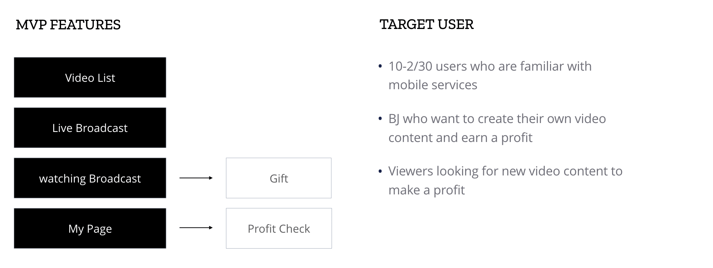

2015
Mobile app project with Planners to plan UX Flow to produce live video platform services to propose MVP design.
As a live video platform service combining advertising, both broadcasters and viewers wanted to create a profitable mobile service.
There were restrictions to collaborate with advertising companies and we aimed to create an MVP ranch.
UX Design with Planner and UI Design(Visual, Prototyping, Interaction)
The main task was set up with the planner, thinking about the user scenario around the target user.
I drew a user flow and organized the required functions and screens. In case of profitability, the planner conducted it separately because the legal issues were intertwined with the advertising business policy.
And there was a restriction that, at the request of the advertising agency, advertising banners should be fixed to the top, and additional banner ads to the bottom.
In view of the previous constraints, I sketched an image-oriented UI and drew it to the user flow.
Organize the broadcast list around the category tags and configure the UI by separating the advertising area from the broadcasting area
Consider the broadcast BJ and the user watching the video to ensure that the task does not break
Key content is determined according to the importance of the information, designed to prevent the information elements from colliding visually
As I worked on the design process, I made prototyping to share to my team. I used Invision and Marvel to simply check the flow of the screen with the planner and principle to check the motion that moves with the developer.
You can see it by mouse hover on the image.


Information was provided in text to highlight the video image. I wanted to minimize visual interference by dividing information into margins. And I sought visual comfort by not using color but by separating information with the strength of text.